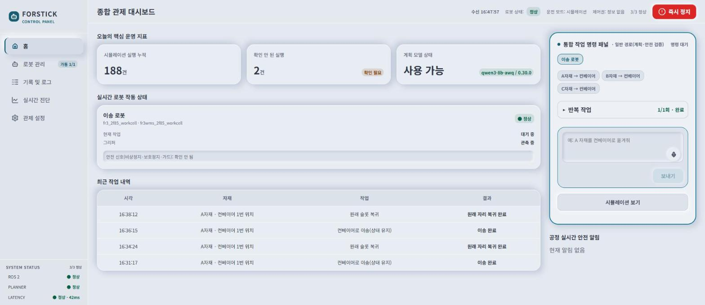
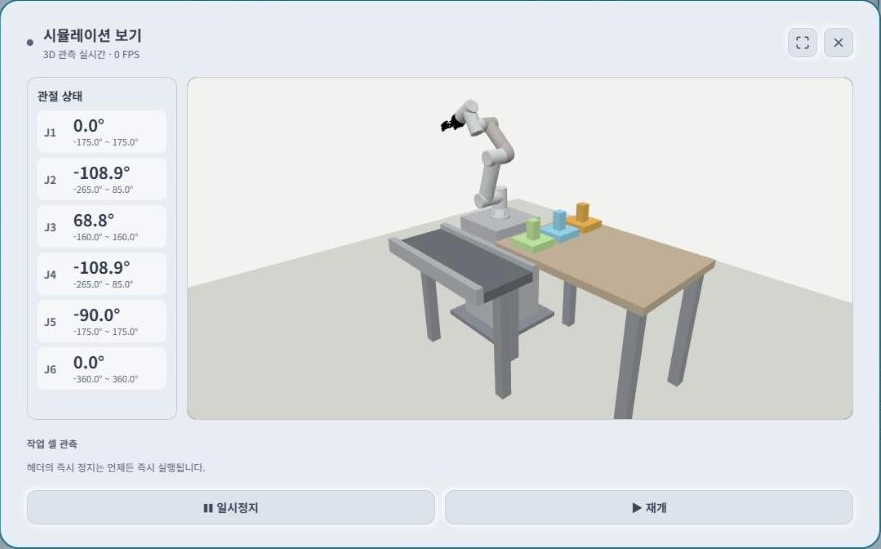

한국어 음성 기반 로봇 작업지시
FORSTICK
말로 지시하고, 검증 후 움직이다
FINAL PRESENTATIONOverview
오늘의 이야기
01 / Why
기획 배경
설정은 어렵다
작업자는 한국어로 지시하고
시스템은 실행 전에 검증한다
현장의 실제 재설정 시간과 절감 효과는 후속 실증 대상
02 / Service
서비스 소개
실행 여부는 검증이 정합니다.
한국어 음성·텍스트 → JSON Task Plan → FR3 Gazebo 작업 셀


03 / Full Cycle
사용자 흐름
어디서 되묻고, 어디서 막는지
작업이 여러 개 관측 정보 부족
놓을 물체 미확인 BLOCK차단 등록 안 된 자재
출발지에 자재 없음 안전 규칙 위반
충돌 · 도달 불가 승인 뒤 조건이 바뀌면
실행 거부 STOP정지 “멈춰”
AI 없이 즉시 헤더 즉시 정지 버튼은 어느 단계에서든 동작
04 / Demo
시연
녹화 영상으로 작업의 전체 흐름을 보여드립니다.
- 한국어 작업 지시
- 계획과 확인 카드
- Gazebo FR3 동작
- 결과와 기록 확인
05 / Evidence
어디까지 확인했나
PC1 봉인 세트 100문장 · 실제 Qwen과 MoveIt을 포함한 계획·판정 평가
이 수치는 계획·판정 단계의 시뮬레이션 평가입니다. 로봇 이동 성능이나 실물 안전성의 측정값은 아닙니다.
근거: PC1 평가요약(2026-10-08), QA 자동화 분류
06 / Gap
아직 부족한 점
안전한 차단만으로는 충분하지 않습니다. 정상 지시도 정확히 받아야 합니다.
대표 사례: “1번 팔레트에 가 있어”를 자재 이송 지시로 오해해 되묻습니다.
모든 비율 막대: 동일한 0–100% 축 · 근거: PC1 평가요약(2026-10-08), 팀원 전달(2026-10-08)
07 / Build
기술 구성과 트러블슈팅
관제 대시보드서버 값 표시 · 음성/텍스트 입력
계획과 검증faster-whisper · Qwen3-8B · 규칙 검사
Gazebo FR3경로 검증 · 시뮬레이션 실행
목업 수치를 제거하고 서버에 없는 값은 ‘확인 안 됨’으로 표시
인자 불일치로 전부 BLOCK으로 기록되던 평가 래퍼와 STOP 채점 오류를 수정
평가 스크립트 정정 · 제품 성능 개선 아님줄임말에서 출발지·목적지가 뒤바뀌던 문제를 하나의 검증된 작업 의도로 통일
“멈춰”도 AI 모델을 거치던 경로를 모델 없이 즉시 정지로 분리
08 / Next
향후 발전 방향
- 01위치 이동 해석 개선으로 정상 지시 오차단 낮추기
- 02실물 FR3 연동과 하드웨어 비상정지 연결
- 03여러 작업 셀 기록을 PostgreSQL로 통합
- 04FR3 외 다양한 로봇 모델 적용
현재 실물 FR3 연결 구현은 아직 없습니다.
09 / Impact
누가, 무엇을 얻나
직관적 지시 방식으로 조립 작업 재프로그래밍 시간 83% 단축 사례
티칭펜던트 대신 말로 작업 변경인력을 늘리지 못하는 가장 큰 이유가 ‘비용 부담’
전문 인력 없이 기존 로봇 활용11년간 산업용 로봇 산재 사망. 비정형 작업 사고의 약 83%가 로봇을 멈추지 않은 상태
실행 전 차단 · 음성 즉시 정지스마트공장 교육 예산을 따로 둔 기업 비율
실물 로봇 없이 계획·검증 실습출처: Perzylo et al., “Intuitive Instruction of Industrial Robots”, IEEE/RSJ IROS 2016 · 중소벤처기업부 「2024년 스마트제조혁신 실태조사」 2025.04.28 · 고용노동부 재해 승인 통계(2014–2024), 세계일보 2026.04.27 보도
10 / Team
팀원 소개 및 역할
FORSTICK